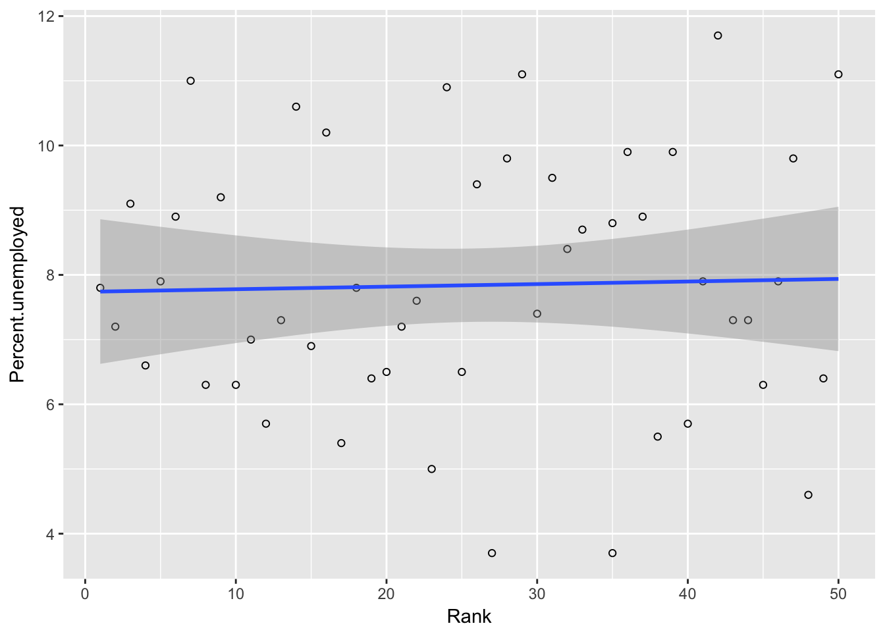
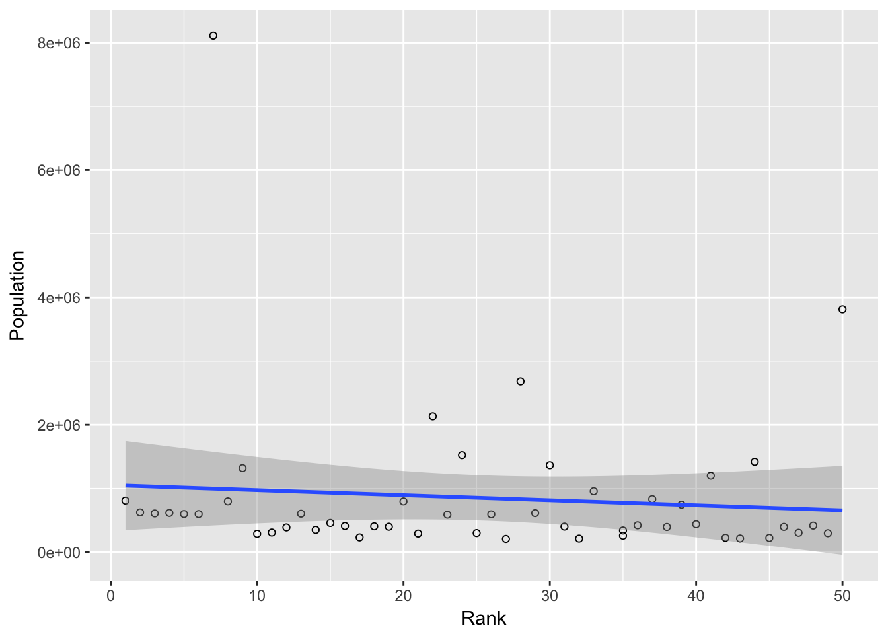

#setwd("~/Documents/2DataViz /BCity")
library(ggplot2)
library(dplyr)
library(tidyr)
library(gudatavizfa17) #Load everytime
#install.packages('googleVis')
#install.packages("ggmap")
library(ggmap)
library(maps)
library(googleVis)
Question 1: Please look at relationships between different variables and identify variables that appear to be strongly related to having a higher rank in the survey.
Facet Graphs: First, we looked at all the variables and compared them against the rankings to try to find relationships.
facetcities=gather(bcities, "Variable", "Values", 1,3:13)
facetcities=facetcities[facetcities$Variable!="City",]
facetcities$Values=as.numeric(facetcities$Values)
ggplot(facetcities,aes(x=Rank,y=Values)) + geom_point(size=.5)+ facet_wrap(~Variable, scales = "free")+geom_smooth(method="lm")
This facet graph gives us a an overview at the relationships between the ranking of the cities and the variables: Population, Bars, Restaurants, Museums, Libraries, Number of Pro Sports Teams, Park Acres to 1000 residents, Colleges, Percentage of people with a Graduate Degree, Median Household Incomes and Percent Unemployed. From this, we wanted to examine some of the relationships further. Then, we ran correlation tests with the variables that we saw the highest relationship with, and the variables we were unsure about.
Comparing Rank with Percentage of People with Graduate Degrees
ggplot(bcities,aes(x=Rank,y=Percent.with.Graduate.Degree)) + geom_point(shape=1) +
geom_smooth(method="lm")
#converting Rank to numeric value
bcities$Rank <- as.numeric(bcities$Rank)
str(bcities)
‘data.frame’: 50 obs. of 15 variables: $ City : Factor w/ 50 levels “Anchorage”,“Arlington”,..: 22 1 31 45 11 8 33 43 37 14 … $ Rank : num 50 49 48 47 46 45 44 43 42 41 … $ Population : int 3811518 297018 416855 304219 396441 223454 1418687 214770 225561 1199739 … $ Bars : int 393 63 206 143 204 10 179 64 83 249 … $ Restaurants : int 8305 682 908 795 866 451 2384 680 596 2808 … $ Museums : int 106 12 12 32 23 1 22 5 10 26 … $ Libraries : int 108 14 15 23 51 8 44 7 14 43 … $ Pro.Sports.Teams : int 5 0 1 3 3 0 5 1 1 2 … $ Park.acres.per.1000.residents: int 6 1753 21 10 7 252 28 72 11 23 … $ Colleges : int 30 2 7 6 8 11 11 2 3 10 … $ Percent.with.Graduate.Degree : num 6.7 7.5 7.1 7.8 4.5 6.8 6.2 10.8 7.1 5.9 … $ Median.household.income : int 56558 85554 64026 44360 35685 80695 60366 99130 64507 44838 … $ Percent.unemployed : num 11.1 6.4 4.6 9.8 7.9 6.3 7.3 7.3 11.7 7.9 … $ lon : num -118.2 -149.9 -96 -90.2 -81.7 … $ lat : num 34.1 61.2 41.3 38.6 41.5 …
#do the correlation command
cor(bcities$Rank, y = bcities$Percent.with.Graduate.Degree, use = "everything",
method = c("pearson"))
[1] -0.5321019
After running a pearson correlation test, the result of -0.53 proves that there is a moderate negative relationship between Rank and Percent with Graduate Degree.
Comparing Rank with Percentage of People who are Unemployed
ggplot(bcities,aes(x=Rank,y=Percent.unemployed)) + geom_point(shape=1) +
geom_smooth(method="lm")

#Performing Correlation Command
cor(bcities$Rank, y = bcities$Percent.unemployed, use = "everything",
method = c("pearson"))
[1] 0.02936767
To prove there is not a relationship between unemployment and the ranking of the cities, we ran another correlation test between the two variables. The r coefficient = 0.0293, proving no relationship.
Comparing Rank with Number of Colleges
ggplot(bcities,aes(x=Rank,y=Colleges)) + geom_point(shape=1) +
geom_smooth(method="lm")
#converting Colleges to numeric value
bcities$Colleges <- as.numeric(bcities$Colleges)
#Performing Correlation Command
cor(bcities$Rank, y = bcities$Colleges, use = "everything",
method = c("pearson"))
[1] -0.272833
Rank and Colleges correlation of = -0.272. Thus, there is a weak downhill correlation between cities ranks and how many colleges they have.
Comparing Rank with Number of Pro Sports Team
ggplot(bcities,aes(x=Rank,y=Pro.Sports.Teams)) + geom_point(shape=1) +
geom_smooth(method="lm")
#converting Pro.Sports.Teams to numeric value
bcities$Colleges <- as.numeric(bcities$Pro.Sports.Teams)
#Performing Correlation Command
cor(bcities$Rank, y = bcities$Pro.Sports.Teams, use = "everything",
method = c("pearson"))
[1] -0.2253149
Rank and Colleges correlation of = -0.222. Thus, there is a weak downhill correlation between how rank and how many pro sports teams.
Comparing Rank with Number of Museums
ggplot(bcities,aes(x=Rank,y=Museums)) + geom_point(shape=1) +
geom_smooth(method="lm")
#converting Museums to numeric value
bcities$Museums <- as.numeric(bcities$Museums)
#Performing Correlation Command
cor(bcities$Rank, y = bcities$Museums, use = "everything",
method = c("pearson"))
[1] -0.2884036
Observing the correlation between Ranking of the City and the amount of museums in a city, it is a larger correlation than Colleges and Ranking. Although the correlation is still weak at r = -0.288.
Comparing Rank with Number of Libraries
ggplot(bcities,aes(x=Rank,y=Libraries)) + geom_point(shape=1) +
geom_smooth(method="lm")
#converting Libraries to numeric value
bcities$Libraries <- as.numeric(bcities$Libraries)
#Performing Correlation Command
cor(bcities$Rank, y = bcities$Libraries, use = "everything",
method = c("pearson"))
[1] -0.2465609
Weak correlation at r = -0.247
Comparing Rank with Number of Bars
ggplot(bcities,aes(x=Rank,y=Bars)) + geom_point(shape=1) +
geom_smooth(method="lm")
#converting Bars to numeric value
bcities$Bars <- as.numeric(bcities$Bars)
#Performing Correlation Command
cor(bcities$Rank, y = bcities$Bars, use = "everything",
method = c("pearson"))
[1] -0.2182305
Low correlation. Weak downhill correlation.
Comparing Rank with Population
ggplot(bcities,aes(x=Rank,y=Population)) + geom_point(shape=1) +
geom_smooth(method="lm")

#converting Population to numeric value
bcities$Population <- as.numeric(bcities$Population)
#Performing Correlation Command
cor(bcities$Rank, y = bcities$Population, use = "everything",
method = c("pearson"))
[1] -0.09293783
One of the lowest correlations, found thus far between Ranking of City and a factor that may have thought to be influenced by the ranking. The pearson correlation variable = -0.0929. This is surprising as the top 10 have higher than average populations, but overall, there is no correlation. Having a higher population will not effect your ranking.
Comparing Rank with Number of Restaurants
ggplot(bcities,aes(x=Rank,y=Restaurants)) + geom_point(shape=1) +
geom_smooth(method="lm")
#converting Restaurants to numeric value
bcities$Restaurants <- as.numeric(bcities$Restaurants)
#Performing Correlation Command
cor(bcities$Rank, y = bcities$Restaurants, use = "everything",
method = c("pearson"))
[1] -0.1666569
There is weak to no relationship between having a large number of restaurants and having a good ranking, with the pearson correlation at -0.167.
The factor with the highest correlation to Rank is people with Graduate Degrees and has the strongest relationship.
Question 2: Plot the cities on a map of the US.
require(maps)
require(ggmap)
Creating columns to better display data(cityrank) and latlong variable to combine coordinates for plotting on gvisgeochart:
bcities$latlong=paste(bcities$lat,bcities$lon, sep=":")
bcities$cityrank=paste(bcities$City,bcities$Rank,sep=": Rank ")
Plot bcities data using gvisGeoChart:
CityLoc=gvisGeoChart(bcities,"latlong",hovervar = "cityrank",options=list(displayMode="Markers",region="US"))
plot(CityLoc)
Question 3: Identify the States in which these cities lie and then develop a choropleth that colors different states based on the number of cities that are present in each State.
Manually input State names:
bcities$States = c("California", "Alaska", "Nebraska", "Missouri", "Ohio", "Virginia", "Arizona", "Arizona", "Nevada", "Texas", "Virginia", "North Carolina", "Oklahoma", "Indiana", "Colorado", "Florida", "Nebraska", "California", "New York", "California", "Texas", "Maryland", "Illinois", "Washington", "Wisconsin", "Kentucky", "Pennsylvania", "Oklahoma", "Texas", "Ohio", "Ohio", "Hawaii", "North Carolina", "Wisconsin", "Georgia", "Kansas", "Lousiana", "Tennessee", "Minnesota", "Pennsylvania", "Minnesota", "California", "Texas", "New York", "Colorado", "Oregon", "Massachusetts", "District of Columbia", "Washington", "California")
Create Data set of States and count cities within each state. Convert char variable to factor variable, and int to number variable.
bstatescount = bcities %>% group_by(States) %>% summarise(Count = n())
bstatescount$Ccount <- as.numeric(bstatescount$Count)
bstatescount$States <- as.factor(bstatescount$States)
str(bstatescount)
Classes ‘tbl_df’, ‘tbl’ and ‘data.frame’: 30 obs. of 3 variables: $ States: Factor w/ 30 levels “Alaska”,“Arizona”,..: 1 2 3 4 5 6 7 8 9 10 … $ Count : int 1 2 5 2 1 1 1 1 1 1 … $ Ccount: num 1 2 5 2 1 1 1 1 1 1 …
Plot dataset using GvizGeoChart
CityCount = gvisGeoChart(bstatescount,
locationvar = "States",
colorvar = "Count",
options=list(region="US", displayMode="regions",
resolution="provinces", width=800,
height=600))
plot(CityCount)